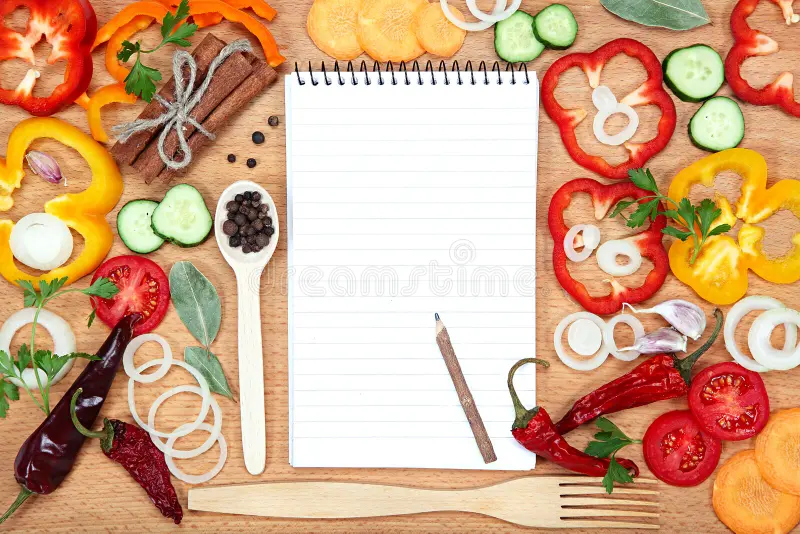
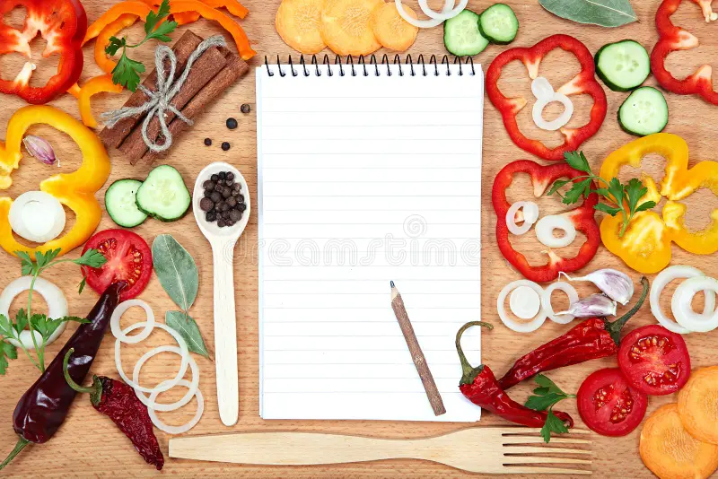

This is a simple recipe website to help you find delicious recipes.
Explore our collection of recipes and start cooking today!
 


Discover a variety of recipes that are easy to follow and perfect for any occasion.
From quick weeknight meals to special occasion dishes, we have something for everyone.
Check out our featured recipes for some inspiration!
Ready to start cooking? Browse our recipes, find your favorites, and get cooking!
Don't forget to share your culinary creations with us on social media!